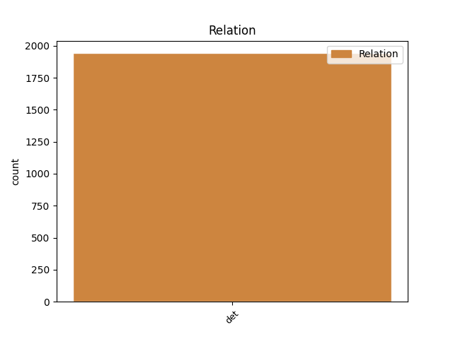
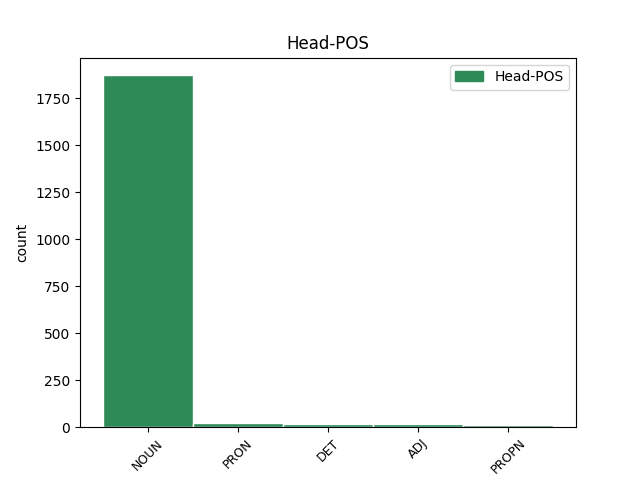
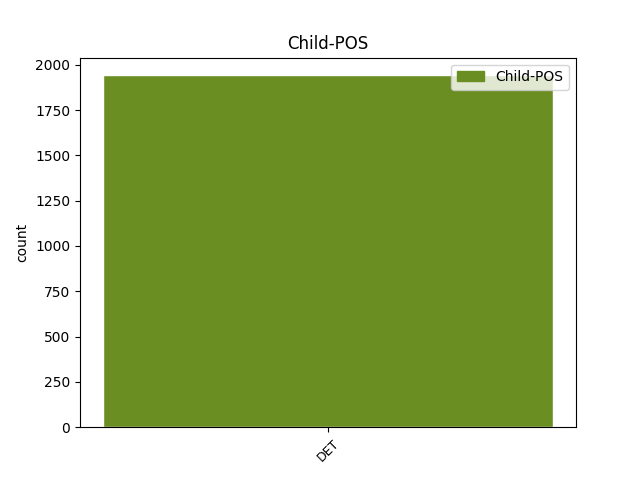

Distribution of features within this leaf



Agreement Rules sorted by frequency.
- When the dependent token is the determiner(det) of the head token, and the dependent token is DET.
1 * _ _ _ _ 0 _ _ _
2 Niektorým _ _ _ _ 0 _ _ _
3 poslancom _ _ _ _ 0 _ _ _
4 padlo _ _ _ _ 0 _ _ _
5 zaťažko _ _ _ _ 0 _ _ _
6 zverejniť _ _ _ _ 0 _ _ _
7 svoje svoj DET PFns4 Case=Acc|Gender=Neut|Number=Sing|Poss=Yes|PronType=Prs|Reflex=Yes 9 det _ _
8 majetkové _ _ _ _ 0 _ _ _
9 priznanie priznanie NOUN SSns4 Case=Acc|Gender=Neut|Number=Sing 0 _ _ _
10 . _ _ _ _ 0 _ _ _
Disagree Examples:
1 Ďalším _ _ _ _ 0 _ _ _
2 dôkazom _ _ _ _ 0 _ _ _
3 samosprávy _ _ _ _ 0 _ _ _
4 týchto toto DET PFnp2 Case=Gen|Gender=Neut|Number=Plur|PronType=Dem 5 det _ _
5 plemien plemeno NOUN SSfp2 Case=Gen|Gender=Fem|Number=Plur 0 _ _ _
6 bola _ _ _ _ 0 _ _ _
7 paralelná _ _ _ _ 0 _ _ _
8 existencia _ _ _ _ 0 _ _ _
9 novgorodského _ _ _ _ 0 _ _ _
10 a _ _ _ _ 0 _ _ _
11 vodského _ _ _ _ 0 _ _ _
12 daňového _ _ _ _ 0 _ _ _
13 okruhu _ _ _ _ 0 _ _ _
14 v _ _ _ _ 0 _ _ _
15 Koporí _ _ _ _ 0 _ _ _
16 . _ _ _ _ 0 _ _ _
1 Pre _ _ _ _ 0 _ _ _
2 potreby _ _ _ _ 0 _ _ _
3 rozvíjajúcej _ _ _ _ 0 _ _ _
4 sa _ _ _ _ 0 _ _ _
5 cirkevnej _ _ _ _ 0 _ _ _
6 organizácie _ _ _ _ 0 _ _ _
7 bol _ _ _ _ 0 _ _ _
8 na _ _ _ _ 0 _ _ _
9 základe _ _ _ _ 0 _ _ _
10 tohto _ _ _ _ 0 _ _ _
11 štatútu _ _ _ _ 0 _ _ _
12 okolo _ _ _ _ 0 _ _ _
13 roku _ _ _ _ 0 _ _ _
14 1100 _ _ _ _ 0 _ _ _
15 vytvorený _ _ _ _ 0 _ _ _
16 štatút _ _ _ _ 0 _ _ _
17 nový _ _ _ _ 0 _ _ _
18 , _ _ _ _ 0 _ _ _
19 ktorý _ _ _ _ 0 _ _ _
20 sa _ _ _ _ 0 _ _ _
21 stal _ _ _ _ 0 _ _ _
22 základným _ _ _ _ 0 _ _ _
23 archetypom _ _ _ _ 0 _ _ _
24 pre _ _ _ _ 0 _ _ _
25 všetky všetok DET PFfp4 Case=Acc|Gender=Fem|Number=Plur|PronType=Tot 27 det _ _
26 neskoršie _ _ _ _ 0 _ _ _
27 odpisy odpis NOUN SSip4 Animacy=Inan|Case=Acc|Gender=Masc|Number=Plur 0 _ _ _
28 . _ _ _ _ 0 _ _ _
1 Vláda _ _ _ _ 0 _ _ _
2 je _ _ _ _ 0 _ _ _
3 pritom _ _ _ _ 0 _ _ _
4 presvedčená _ _ _ _ 0 _ _ _
5 o _ _ _ _ 0 _ _ _
6 nevyhnutnosti _ _ _ _ 0 _ _ _
7 zavádzať _ _ _ _ 0 _ _ _
8 do _ _ _ _ 0 _ _ _
9 rezortu _ _ _ _ 0 _ _ _
10 pôdohospodárstva _ _ _ _ 0 _ _ _
11 , _ _ _ _ 0 _ _ _
12 pri _ _ _ _ 0 _ _ _
13 rešpektovaní _ _ _ _ 0 _ _ _
14 niektorých niektorý DET PAfp2 Case=Gen|Gender=Fem|Number=Plur|PronType=Ind 15 det _ _
15 špecifík špecifikum NOUN SSnp2 Case=Gen|Gender=Neut|Number=Plur 0 _ _ _
16 , _ _ _ _ 0 _ _ _
17 trhové _ _ _ _ 0 _ _ _
18 podmienky _ _ _ _ 0 _ _ _
19 a _ _ _ _ 0 _ _ _
20 slobodnú _ _ _ _ 0 _ _ _
21 konkurenciu _ _ _ _ 0 _ _ _
22 . _ _ _ _ 0 _ _ _
1 Za _ _ _ _ 0 _ _ _
2 ich ich DET PUfp2 Case=Gen|Gender=Fem|Number=Plur|Number[psor]=Plur|Person=3|Poss=Yes|PronType=Prs 3 det _ _
3 zvukov zvuk NOUN SSip2 Animacy=Inan|Case=Gen|Gender=Masc|Number=Plur 0 _ _ _
4 som _ _ _ _ 0 _ _ _
5 zaspal _ _ _ _ 0 _ _ _
6 . _ _ _ _ 0 _ _ _
1 Od _ _ _ _ 0 _ _ _
2 rána _ _ _ _ 0 _ _ _
3 do _ _ _ _ 0 _ _ _
4 večera _ _ _ _ 0 _ _ _
5 som _ _ _ _ 0 _ _ _
6 pil _ _ _ _ 0 _ _ _
7 čaj _ _ _ _ 0 _ _ _
8 s _ _ _ _ 0 _ _ _
9 citrónom _ _ _ _ 0 _ _ _
10 , _ _ _ _ 0 _ _ _
11 aby _ _ _ _ 0 _ _ _
12 som _ _ _ _ 0 _ _ _
13 sa _ _ _ _ 0 _ _ _
14 čo _ _ _ _ 0 _ _ _
15 najskôr _ _ _ _ 0 _ _ _
16 uzdravil _ _ _ _ 0 _ _ _
17 a _ _ _ _ 0 _ _ _
18 mohol _ _ _ _ 0 _ _ _
19 Lienke _ _ _ _ 0 _ _ _
20 splniť _ _ _ _ 0 _ _ _
21 jej jej DET PUfs4 Case=Acc|Gender=Fem|Gender[psor]=Fem|Number=Sing|Number[psor]=Sing|Person=3|Poss=Yes|PronType=Prs 22 det _ _
22 sen sen NOUN SSis4 Animacy=Inan|Case=Acc|Gender=Masc|Number=Sing 0 _ _ _
23 . _ _ _ _ 0 _ _ _